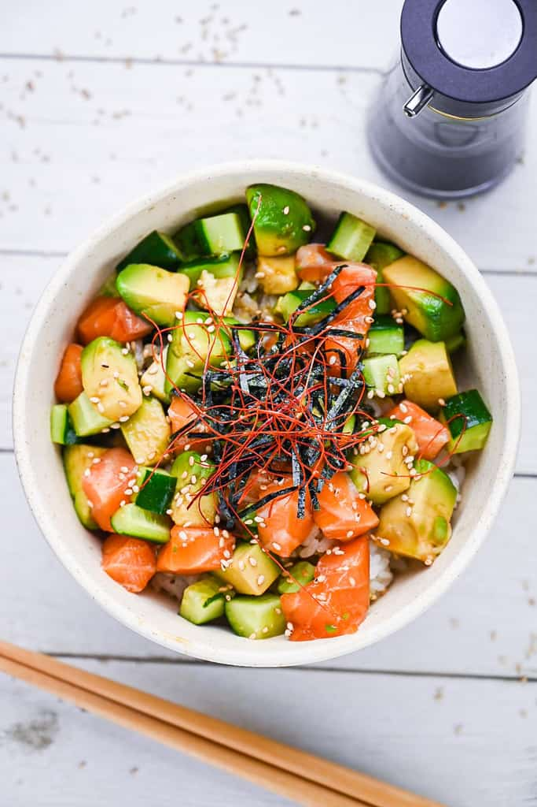

Chirashi
Home

Description
Chirashi is a rice bowl topped with slices of sashimi-grade raw salmon, cucumber, and avocado.
Ingredients
- 1 tbsp soy sauce
- 1 tbsp rice wine
- 75 g avocado
- 125 g cucumber
- 200g sashimi-grade salmon
Method
- Pour soy sauce and rice wine into a small pan and boil it over medium heat for 1-2 minutes.
- Cut salmon, avocado and cucumber into cubes.
- Pour the soy sauce marinade over the avocado and salmon, and leave it to marinate for 30 minutes.
- Serve over cooked rice.